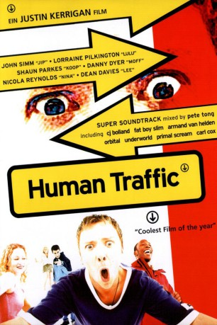
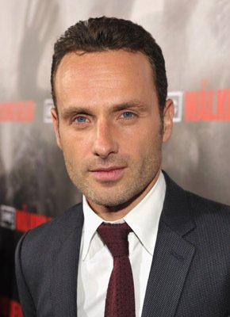

#7403 Human Traffic
 
 IMDB-Wertung: 7.1 / 10
IMDB-Wertung: 7.1 / 10  Metascore: 0
Metascore: 0 
Losziehen…Feiern…und Abheben… Sex, Drogen, Clubs, Parties – Wochenende ist angesagt. Feiern bis zum Abwinken. Jip und seine Clique ziehen los. Sie haben knapp 48 Stunden. 48 Stunden Dampf abzulassen, 48 Stunden zum Abtanzen, 48 Rausch…Dann beginnt wieder der langweilige Alltag, den sie bis zum nächsten Partywochenende überstehen müssen. Eine atemlose, witzige, durchgeknallte Reise durch die englische Rave-Szene Ende der 90er. Das macht richtig Spaß
Jahr: 1999
Dauer: 99 Minuten
FSK: 18
Land: England Studio: Sunfilm EntertainmentTonspuren:
Untertitel:
Auflösung: 720p (1280x696) Größe: 4608 MB
Genre: Musik, Komödie
Regisseur: Justin Kerrigan
Drehbuch: Fernando Navarro
Soundtrack:
Darsteller:
- John Simm als Jip
 Shaun Parkes als Koop
Shaun Parkes als Koop- Nicola Reynolds als Nina
 Danny Dyer als Moff
Danny Dyer als Moff- Jan Anderson als Karen Benson
- Terence Beesley als Moff's Father
- Jo Brand als Reality
 Richard Coyle als Andy
Richard Coyle als Andy- Carl Cox als Pablo Hassan
- Bradley Freegard als Tyler
-  Andrew Lincoln als Felix
 Philip Rosch als Jip's Manager
Philip Rosch als Jip's Manager- Menna Trussler als Lulu's Auntie Violet
- Lorraine Pilkington als Lulu
- Dean Davies als Lee
- Peter Albert als Lulu's Uncle Eric
- Sarah Blackburn als Jip's Ex #2
- Anne Bowen als Moff's Grandmother
- Neil Bowens als Asylum Doorman
- Peter Bramhill als Matt
- Stephanie Brooks als Fleur
- Nicola Davey als Jip's Ex #3
- Roger Evans als Inca
- Helen Griffin als Jip's Mother
- Emma Hall als Trixi
- Elizabeth Harper als Jip's Ex #1
- Carol Harrison als Moff's Mother
- Jennifer Hill als Jip's Secretary
- Tyrone Johnson als Hip Hop Junkie
- Justin Kerrigan als Ziggy Marlon
- Nicola Heywood-Thomas als TV Interviewer
- Nick Kilroy als Herbie
- Howard Marks als Howard Marks
- Robert Marrable als Casey
- Louis Marriot als Cardiff Bad Boy
- Danny Midwinter als Tyrone
- Millsy in Nottingham als Millsy From Roath
- Robbie Newby als Karen Benson's Boyfriend
- Ninjah als Tom Tom's MC
- Cadfan Roberts als Jip's Mother's Client
- Mad Doctor X als Koop's Workmate
- Jason Samuels als Bad Boy
- Mark Seaman als Jeremy Faxman
- Lynne Seymour als Connie
- Patrick Taggart als Luke
- Giles Thomas als Martin
- Larrington Walker als Koop's Father
- Anna Wilson als Boomshanka
- Eilian Wyn als Doctor
- Tim Hamilton als Breakdancer / Bodypopper
Datei: X:\FSK18-1900-1999\Human Traffic (1999, FSK18, 1280x696).mkv seit 08.11.2017
Festplatte: FSK18
 Es gibt insgesamt 108 Filme in der Gruppe 'FSK18-1900-1999'
Es gibt insgesamt 108 Filme in der Gruppe 'FSK18-1900-1999'